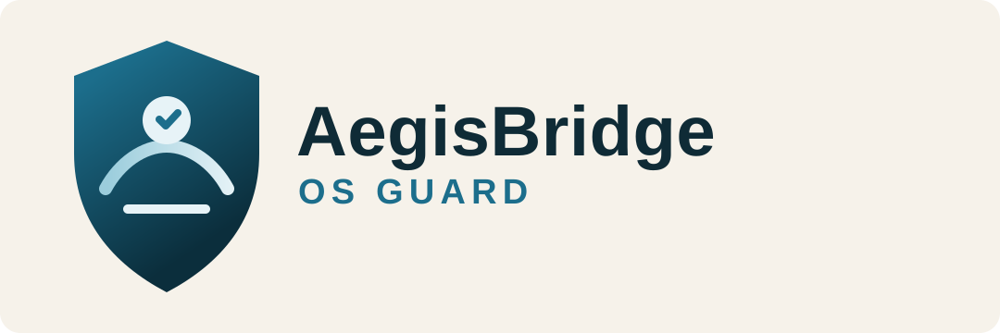

Platform
AegisBridge OS Guard — "Aegis" signals protection, "Bridge" represents lifecycle extension, and "OS Guard" defines continuous operational defense.

Windows Endpoint Security & Readiness
AegisBridge OS Guard extends device service life through official upgrade guidance, transparent endpoint security controls, and low-friction background operations.
AegisBridge OS Guard — "Aegis" signals protection, "Bridge" represents lifecycle extension, and "OS Guard" defines continuous operational defense.
Enterprise-grade readiness and security for organizations that need predictable migrations and measurable endpoint performance.
Device profiling for TPM, Secure Boot, CPU, memory, and storage with policy-driven migration recommendations.
Lightweight scanning pipeline designed for millisecond-scale decisions without heavy endpoint disruption.
Runs quietly by default while preserving full admin visibility via logs, policies, and centralized control planes.
AegisBridge OS Guard does not include or document hardware requirement bypass methods. Deployment guidance uses vendor-supported and auditable operating procedures only.